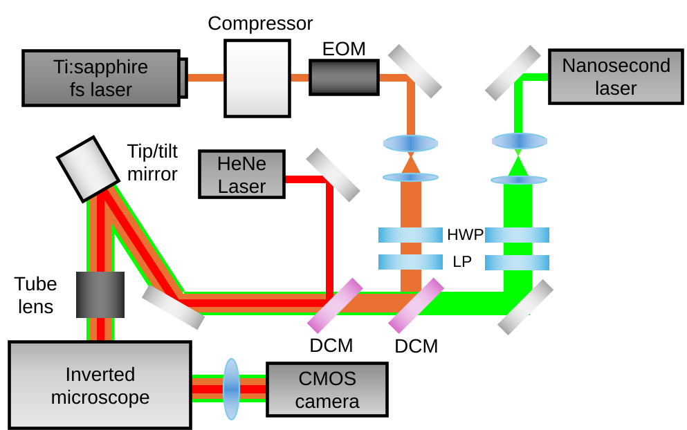

Research Projects
Dual-Laser 3D Printing for Efficient Nanofabrication
The Problem
Two-photon polymerization (2PP) can print 3D microstructures with sub-micron features — but it depends on expensive, high-power femtosecond lasers. The reason: the fs laser must first deplete inhibition radicals in the photoresist before polymerization can begin, demanding high peak power. This cost barrier limits access for many labs and complicates commercial scale-up.
My Contribution
- Invented the two-color printing concept: a cheap 532 nm ns laser pre-depletes inhibitors via single-photon absorption, freeing the fs source to drive only polymerization at much lower power
- Designed and built the full dual-laser optical platform from scratch
- Developed a rate-equation photochemical model to explain the mechanism and guide optimization
- Led the Optics Express publication and presented at SPIE Photonics West 2024
How the Inhibitor Depletion Works
In standard 2PP, the femtosecond laser handles two jobs: depleting inhibitors and driving polymerization. By handing the depletion job to a nanosecond 532 nm laser — which does it efficiently via single-photon absorption — the fs laser only needs to handle two-photon polymerization. This decoupling cuts the required fs power by up to 80% in 2D and 50% in 3D, where the beam must re-deplete inhibitors diffusing in from surrounding volumes.
Optical Platform
- 532 nm ns laser co-axially combined with 800 nm Ti:Sapphire fs oscillator via dichroic beam combiner
- Custom prism-based pulse compressor for fs pulse temporal control
- EOM for sub-millisecond power modulation; piezo tip/tilt mirror for beam stabilization at the print plane
- High-NA oil-immersion objective for co-focal delivery of both beams
- Five-axis stage for precise 3D positioning
Printing Process — Step by Step
ns Laser Pre-Depletion
The 532 nm nanosecond laser illuminates the focal volume, depleting inhibition radicals in the photoresist via single-photon absorption — the "priming" step that normally demands high fs laser power.
fs Laser Two-Photon Polymerization
With inhibitors already consumed, the 800 nm femtosecond laser drives two-photon absorption at the tightly focused voxel, polymerizing material at well below the usual threshold power (~50% reduction for 3D structures, ~80% for 2D).
Photochemical Modeling & Validation
A rate-equation photochemical model was developed to capture the coupled kinetics of single- and two-photon absorption, inhibitor depletion, and radical generation. Predictions were validated against printed voxel sizes and power-threshold measurements across a range of conditions.
Complex 3D Structure Fabrication
Woodpile photonic crystal lattices, a micron-scale buckyball, a chiral structure, and a trefoil knot were all printed at reduced fs laser power — demonstrating the technique generalizes beyond simple test geometries.
Why Not Just Upgrade the Laser?
A simpler approach would be to use a higher-power fs source — but that only shifts the cost problem, not solves it. By choosing a fundamentally different photochemical strategy (pre-depletion with a low-cost CW-like source), the required fs power drops enough that less expensive lasers become viable for high-resolution printing. The EOM and piezo tip/tilt mirror were chosen over simpler AOM modulation because they provide the sub-millisecond switching speed needed to synchronize both beams without spatial or temporal jitter at the print plane.

Geometric Accuracy in Projection Multiphoton Lithography
The Problem
Projection multiphoton lithography (PMPL) overcomes the slow, voxel-by-voxel nature of serial 2PP by illuminating an entire layer at once using a digital micromirror device (DMD). The throughput gain is significant — but printed structures systematically deviate from the intended DMD patterns: shapes come out rounded, undersized, or non-uniform across the layer. Before this work, there was no quantitative framework for predicting or correcting these errors.
My Contribution
- Developed a full 3D numerical framework coupling Fourier optics field propagation with reaction-diffusion photochemical kinetics in MATLAB
- Identified three dominant distortion sources from first principles — without empirical trial-and-error
- Designed model-guided compensation strategies and validated them experimentally with mean absolute error <150 nm
- Integrated secondary laser modulation to improve layer uniformity
- Led writing of the Advanced Optical Materials publication
Where the Errors Come From
Three distinct physical mechanisms cause geometric distortion in PMPL. First, oxygen inhibition at feature edges consumes radicals before polymerization can fully occur, shrinking features inward. Second, lateral oxygen diffusion from unilluminated surrounding regions adds asymmetric shrinkage that depends on feature geometry and size. Third, DMD pixel boundaries create diffraction-induced intensity ripples that locally modulate cure depth. Each mechanism produces a distinctive distortion signature — which is what made it possible to separate and compensate them independently.
Numerical Framework
- 3D optical intensity field computed from DMD patterns using Fourier optics, capturing diffraction at micromirror boundaries
- Coupled to a reaction-diffusion model tracking photoinitiator, oxygen, and radical concentrations through time
- Simulated elementary geometries (circles, rectangles) as building blocks of complex 3D architectures
- Model predictions compared to SEM measurements across a sweep of laser fluence and geometry size
- Pixel-level DMD compensation maps developed from model outputs to pre-distort input patterns
Modeling & Compensation Pipeline
Optical Field Propagation
The spatiotemporally focused projection beam was modeled using Fourier optics, accounting for DMD pixel diffraction, objective pupil clipping, and the spatiotemporal coupling introduced by the grating-lens pair in the STFP architecture.
Reaction-Diffusion Simulation
Coupled PDEs describing oxygen diffusion, photoinitiator consumption, inhibitor depletion, and radical generation were solved in 3D. Oxygen diffusion from outside the illuminated region proved critical — explaining why feature edges consistently showed more distortion than feature centers.
Distortion Identification
Three dominant error sources identified: (1) oxygen inhibition reducing feature size near edges, (2) lateral oxygen diffusion from unilluminated surroundings adding asymmetric shrinkage, and (3) DMD pixel diffraction creating intensity ripples that locally modulate cure depth.
Compensation & Validation
Model-guided DMD pattern pre-compensation and secondary laser integration were implemented to counteract the identified distortion sources. Experimental measurements on printed circles and rectangles confirmed mean absolute dimensional errors below 150 nm.
Why Physics-Based, Not Empirical?
A purely empirical correction approach (print → measure → adjust) would require a prohibitive number of calibration prints for each new geometry and would not generalize to new resins. By grounding the compensation in a physics-based model, the correction method extrapolates: once the oxygen diffusivity and photoinitiator kinetics of a resin are characterized, the model predicts geometric errors for any arbitrary DMD pattern — making the strategy genuinely practical for complex 3D architectures, not just the simple test geometries used in calibration.